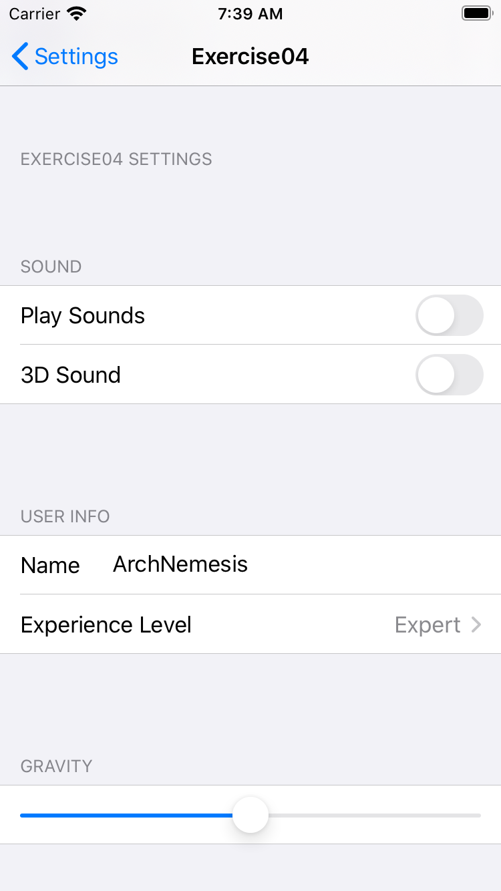

At the conclusion of this lesson, participants will be able to:
- Use the UserDefaults class to store and retrieve application preferences to the user defaults system
- Implement the code to register default values for preference values
- Describe the use of the settings bundle to create an entry in the Settings app
- Modify the settings bundle to create a customised entry in the Settings app
- Describe the relationship between application preferences and the settings bundle
What you'll need
- Mac running macOS (Mojave or Catalina)
- Xcode 11
Data persistence means that data is saved to non-volatile storage and can be retrieved even after an app is restarted or the device running the app is rebooted.
There are different ways that data can be persisted such as:
- UserDefaults - simple key-value storage, used for user settings or app states (covered in P08)
- Codable and FileManager - Codable enables an object to be encoded and decoded for archiving and unarchiving, while FileManager does the archiving and unarchiving (covered in P09)
- SQLite - a relational database management system (not covered in this module)
- CoreData - an object graph and persistence framework (not covered in this module)
Before we learn about user defaults, we will learn about the nil-coalescing operator which will be useful later on.
https://docs.swift.org/swift-book/LanguageGuide/BasicOperators.html
The nil-coalescing operator (??) has two operands and returns a value. A sample statement is shown below (assuming a and b have been previously declared).
var result = a ?? bThe nil-coalescing operator is shorthand for the code below (assuming a, b and result have been previously declared):
if a != nil { // if a is not nil
result = a! // unwrap a and assign it to result
} else { // else if a is nil
result = b // assign the value of b to result
}Example:
var a : String? = "a"
var b : String = "b"
var result : String = a ?? b
print(result)
// result has the value "a"
a = nil
result = a ?? b
print(result)
// result has the value "b"- Create a new playground called Activity01
- Add the code shown below, then run the code. Note that when a is not nil, result has the unwrapped value of a. When a is nil, result has the value of b. Also, note that the data type of result and b is String, while the data type of a is String?
var a : String? = "a"
var b : String = "b"
var result : String = a ?? b
print(result)
// result has the value "a"
a = nil
result = a ?? b
print(result)
// result has the value "b"- Create a new playground called Exercise01 with the code shown below:
var a : String? = "a"
var b : String = "b"
var result : String = a ?? b
// a = "hello", b = "goodbye", the value of result is _BLANK_
// a = nil, b = "goodbye", the value of result is _BLANK_
var userDefinedColor : String? = nil
var defaultColor = "red"
var color = userDefinedColor ?? defaultColor
// userDefinedColor = "blue", b = "red", the value of color is _BLANK_
// userDefinedColor = nil, b = "red", the value of color is _BLANK_
var height : Int? = 175
var defaultHeight = 170
var myHeight = height ?? defaultHeight
// height = nil, defaultHeight = 170, the value of myHeight is _BLANK_
// height = 175, defaultHeight = 170, the value of myHeight is _BLANK_- At the end of each comment, put in the correct answer for _BLANK_
https://developer.apple.com/reference/foundation/userdefaults
An interface to the user's defaults database, where you store key-value pairs persistently across launches of your app. Primarily used for storing and retrieving user settings or application states.
To store a key-value pair, use the set(_:forKey:) method on the UserDefaults object.
To retrieve a value associated with a key, use the appropriate UserDefaults method based on the data type of the value (see table below for some of the commonly used value data types). Where the return type is Any, the value needs to be cast to the correct type before it is used by using the as! operator.
Data type of value | Method to retrieve value | Value if key does not exist |
|
|
|
|
|
|
|
|
|
|
|
|
|
|
|
|
|
|
|
|
|
|
|
|
Storing to UserDefaults
The code to store to the UserDefaults object is given below:
// Step 1 - get the UserDefaults object
let defaults = UserDefaults.standard
// Step 2 - set the value for the desired key
defaults.set("John Tan", forKey:"name")The typical workflow for setting user defaults:
- Get the UserDefaults object
- Set the value for the desired key
Retrieving from UserDefaults
The code to retrieve values from the UserDefaults object is given below:
// Step 1 - get the UserDefaults object
let defaults = UserDefaults.standard
// Step 2 - get the value for the desired key
let name = defaults.string(forKey:"name")The typical workflow for getting user defaults:
- Get the UserDefaults object
- Get the value for the desired key
Removing from UserDefaults
The code to remove from the UserDefaults object is given below:
// Step 1 - get the UserDefaults object
let defaults = UserDefaults.standard
// Step 2 - remove the value for the desired key
defaults.removeObject(forKey:"name")The typical workflow for removing from user defaults:
- Get the UserDefaults object
- Remove the value for the desired key
- Create a new project SampleProject02 using the Single View Application template.
- Run the application. From the Simulator menu bar, select
Device,Erase All Content and Settings...
In Main.Storyboard
- Add 2 buttons titled Load (IBAction
actLoad) and Save (IBActionactSave)
In ViewController.swift
- Update the
actLoad(_:)method.
@IBAction func actLoad(_ sender: UIButton) {
// Step 1 - get the UserDefaults object
let defaults = UserDefaults.standard
// Step 2 - get the value for the desired key
let booleanValue = defaults.bool(forKey: "booleanValue")
let integerValue = defaults.integer(forKey: "integerValue")
let doubleValue = defaults.double(forKey: "doubleValue")
let stringValue = defaults.string(forKey: "stringValue")
// print out the values for debugging purposes
print("booleanValue is \(booleanValue)")
print("integerValue is \(integerValue)")
print("doubleValue is \(doubleValue)")
print("stringValue is \(stringValue)")
}- Run the application and press the Load button. At this point, these keys do not exist in the user's defaults database, hence we get the output shown below.
booleanValue is false
integerValue is 0
doubleValue is 0.0
stringValue is nil- Update the
actSave(_:)method.
@IBAction func actSave(_ sender: UIButton) {
// Step 1 - get the UserDefaults object
let defaults = UserDefaults.standard
// Step 2 - get the value for the desired key
defaults.set(true, forKey: "booleanValue")
defaults.set(12, forKey: "integerValue")
defaults.set(34.56, forKey: "doubleValue")
defaults.set("Hello World!", forKey: "stringValue")
// Step 3 - force changes to be committed
defaults.synchronize()
}- Run the application, press the Save button, and press the Load button. The values were saved to UserDefaults when the Save button was pressed, and retrieved from the UserDefaults when the Load button was pressed, hence we get the output shown below.
booleanValue is true
integerValue is 12
doubleValue is 34.56
stringValue is Optional("Hello World!")- Run the application again and press the Load button. We get the same output as above, proving that the data is persistent across application restarts.
- Quit the simulator. Run the application again and press the Load button. We get the same output as above, proving that the data is persistent across device reboots.
- It is common practice to use the nil-coalescing operator when using
string(forKey:). As an example, the code inactLoad(_:)could be modified as such:
@IBAction func actLoad(_ sender: UIButton) {
// Step 1 - get the UserDefaults object
let defaults = UserDefaults.standard
// Step 2 - get the value for the desired key
let booleanValue = defaults.bool(forKey: "booleanValue")
let integerValue = defaults.integer(forKey: "integerValue")
let doubleValue = defaults.double(forKey: "doubleValue")
let stringValue = defaults.string(forKey: "stringValue") ?? "no value"
// print out the values for debugging purposes
print("booleanValue is \(booleanValue)")
print("integerValue is \(integerValue)")
print("doubleValue is \(doubleValue)")
print("stringValue is \(stringValue)")
}Create a playground called Exercise02. Keep the import UIKit statement at the top of the playground so that we have access to the UserDefaults class. Write the following code:
- Retrieve the value associated with the key
favouriteMovieto a variablemovie; if there is no associated value, use the nil-coalescing operator to set the value ofmovieto Big Hero 6; print the value of movie - For the key
favouriteMovie, store the value Star Trek to UserDefaults - Retrieve the value associated with the key
favouriteMovietomovieand print the value of movie
In the examples so far, if the key does not exist, we get the default values of zero, false or nil. It is possible to register a default value to return if a particular key does not exist. This is achieved by creating a dictionary of keys and default values, then registering that dictionary to the UserDefaults object. Sample code is shown below:
// create a dictionary to hold key-value pairs
var myAppDefaults = [String: Any]()
// add key-values pairs to the dictionary
myAppDefaults["integerValue"] = 7
myAppDefaults["doubleValue"] = 8.8
myAppDefaults["stringValue"] = "happiness"
// register the defaults
let defaults = UserDefaults.standard
defaults.register(defaults:myAppDefaults)- Create a new project SampleProject03 using the Single View Application template.
- We will investigate the 4 scenarios stated below:
Scenario | Default registered? | Key exists? | Retrieved value |
Scenario1 | No | No | 0, false or nil depending on the method used to retrieve the value |
Scenario2 | Yes | No | registered default value |
Scenario3 | No | Yes | associated value |
Scenario4 | Yes | Yes | associated value |
In ViewController.swift
- Update the viewDidLoad() method:
import UIKit
class ViewController: UIViewController {
override func viewDidLoad() {
super.viewDidLoad()
let defaults = UserDefaults.standard
// register the default values for scenario 2 and scenario 4
var myAppDefaults = [String: Any]()
myAppDefaults["scenario2"] = "scenario 2 registered default value"
myAppDefaults["scenario4"] = "scenario 4 registered default value"
defaults.register(defaults: myAppDefaults)
// set the associated values for scenario 3 and scenario 4
defaults.set("scenario 3 associated value", forKey: "scenario3")
defaults.set("scenario 4 associated value", forKey: "scenario4")
// read back the values
print("S1 \(defaults.string(forKey: "scenario1"))")
print("S2 \(defaults.string(forKey: "scenario2"))")
print("S3 \(defaults.string(forKey: "scenario3"))")
print("S4 \(defaults.string(forKey: "scenario4"))")
}
}- Run the application. You should see the following in the debug area:
S1 nil
S2 Optional("scenario 2 registered default value")
S3 Optional("scenario 3 associated value")
S4 Optional("scenario 4 associated value")
Create a playground called Exercise03. Keep the import UIKit statement at the top of the playground so that we have access to the UserDefaults class. Write the following code:
- register default values for UserDefaults based on the table below
key | registered default |
|
|
|
|
- print the retrieved values from UserDefaults for the keys
currencyandbackgroundColor
The keys stored in UserDefaults are often called preferences and the associated values are called preference values. These preference values are used to customise the behaviour of the app according to the user's preferences; for example, an app could have a preference for the background color which would allow the user to choose from a list of colors.
There are two options to present a user interface for users to see and manage preferences:
- create a custom user interface inside your app to get the user's preferences, and write the associated code to store it to the UserDefaults
- create a Settings Bundle which will be used by the Settings App which comes on all iOS devices
A settings bundle describes the structure and presentation of your preferences in the Settings app. The figure below shows 5 preference control types: Group, Text Field, Multi Value, Toggle Switch and Slider. 2 other types: Title and Child pane, are not shown in the figure, but are described in the table.
Control type | Description |
Group | The group type is for organizing groups of preferences on a single page. The group type does not represent a configurable preference. It simply contains a title string that is displayed immediately before one or more configurable preferences. |
Text field | The text field type displays a title (optional) and an editable text field. You can use this type for preferences that require the user to specify a custom string value. |
Multivalue | The multivalue type lets the user select one value from a list of values. You can use this type for a preference that supports a set of mutually exclusive values. The values can be of any type. |
Toggle switch | The toggle switch type displays an ON/OFF toggle button. You can use this type to configure a preference that can have only one of two values. Although you typically use this type to represent preferences containing Boolean values, you can also use it with preferences containing non-Boolean values. |
Slider | The slider type displays a slider control. You can use this type for a preference that represents a range of values. The value for this type is a real number whose minimum and maximum value you specify. |
Title | The title type displays a read-only string value. You can use this type to display read-only preference values. (If the preference contains cryptic or nonintuitive values, this type lets you map the possible values to custom strings.) |
Child pane | The child pane type lets the user navigate to a new page of preferences. You use this type to implement hierarchical preferences. For more information on how you configure and use this preference type, see Hierarchical Preferences. |
Getting notified of changes to preference values in Settings app
An app is not automatically aware of changes made to the preference values in the Settings app. The following code needs to be added to any view controller which wants to be notified when changes are made.
override func viewDidLoad() {
super.viewDidLoad()
let center = NotificationCenter.default
center.addObserver(self,
selector: #selector(self.settingsChanged(_:)),
name: UserDefaults.didChangeNotification,
object: nil)
}
@objc func settingsChanged(_ notification: NSNotification) {
// do something with the updated preferences
}Synchronising settings bundle defaults with preference defaults
The default values for the preferences in the Settings Bundle are only used for display purposes in the Settings App. In AppDelegate.swift, add the helper function registerDefaultsFromSettingsBundle() and call the helper function in application(_:didFinishLaunchingWithOptions:). This will register the default values in the Settings Bundle as default values for the UserDefaults object.
func registerDefaultsFromSettingsBundle()
{
let settingsUrl = Bundle.main.url(forResource: "Settings", withExtension: "bundle")!.appendingPathComponent("Root.plist")
let settingsPlist = NSDictionary(contentsOf:settingsUrl)!
let preferences = settingsPlist["PreferenceSpecifiers"] as! [NSDictionary]
var defaultsToRegister = Dictionary<String, Any>()
for preference in preferences {
guard let key = preference["Key"] as? String else {
continue
}
defaultsToRegister[key] = preference["DefaultValue"]
}
UserDefaults.standard.register(defaults: defaultsToRegister)
}func application(_ application: UIApplication,
didFinishLaunchingWithOptions launchOptions: [UIApplication.LaunchOptionsKey: Any]?) -> Bool {
registerDefaultsFromSettingsBundle()
return true
}- Create a new project SampleProject04 using the Single View Application template.
- Run the application. From the Simulator menu bar, select
Device,Erase All Content and Settings...
In Main.storyboard
- Add 3 labels with the IBOutlet properties
outLabelName,outLabelEnabled,outLabelSlider. Follow the user interface shown below:
In Project Navigator
- Create a new file by selecting
iOS,Resource,Settings Bundle. Save the file as Settings.
- Select
Settings.bundle,Root.plistand it will appear in the editor window. Note that the Settings Bundle created uses the following control types: Group, Text Field, Toggle Switch and Slider. For the Text Field, Toggle Switch and Slider, the Identifier will be used as keys in UserDefaults, and the Default Value will be registered as default values for those keys. Take note of the identifiersname_preference,enabled_preferenceandslider_preference.

- Run the app from Xcode. Press Shift-Cmd-H to get to the home screen. Swipe to the first screen of apps for the Settings app (Screenshot 1). Launch the Settings app, scroll to the bottom and click on SampleProject04 (Screenshot 2). The preferences for SampleProject04 are shown (Screenshot 3).
Screenshot 1 | Screenshot 2 | Screenshot 3 |
|

In ViewController.swift:
- Update ViewController
import UIKit
class ViewController: UIViewController {
@IBOutlet weak var outLabelName: UILabel!
@IBOutlet weak var outLabelEnabled: UILabel!
@IBOutlet weak var outLabelSlider: UILabel!
override func viewDidLoad() {
super.viewDidLoad()
retrievePreferences()
}
func retrievePreferences() {
// Step 1 - get the UserDefaults object
let defaults = UserDefaults.standard
// Step 2 - get the value for the desired key (keys match the preference identifiers)
let name = defaults.string(forKey: "name_preference") ?? "no value"
let enabled = defaults.bool(forKey: "enabled_preference")
let slider = defaults.double(forKey: "slider_preference")
// show the values for debugging purposes
outLabelName.text = "\(name)"
outLabelEnabled.text = "\(enabled)"
outLabelSlider.text = "\(slider)"
}
}- Run the app from Xcode. You should see the following:
- Go to the settings page for SampleProject04 and set the name as John Tan.
- Run the app from Xcode. You should see the following:

- Go to the settings page for SampleProject04. Toggle the switch to false, then true again. Move the slider to the maximum value.
- Run the app from Xcode. You should see the following:
Getting notified of changes to preference values in Settings app
- If we want the app to be notified when there are changes made via the Settings App, we need to add the following code to the view controller that wants to be notified.
import UIKit
class ViewController: UIViewController {
@IBOutlet weak var outLabelName: UILabel!
@IBOutlet weak var outLabelEnabled: UILabel!
@IBOutlet weak var outLabelSlider: UILabel!
override func viewDidLoad() {
super.viewDidLoad()
let center = NotificationCenter.default
center.addObserver(self,
selector: #selector(self.settingsChanged(_:)),
name: UserDefaults.didChangeNotification,
object: nil)
retrievePreferences()
}
func retrievePreferences() {
// Step 1 - get the UserDefaults object
let defaults = UserDefaults.standard
// Step 2 - get the value for the desired key (keys match the preference identifiers)
let name = defaults.string(forKey: "name_preference") ?? "no value"
let enabled = defaults.bool(forKey: "enabled_preference")
let slider = defaults.double(forKey: "slider_preference")
// show the values for debugging purposes
outLabelName.text = "\(name)"
outLabelEnabled.text = "\(enabled)"
outLabelSlider.text = "\(slider)"
}
@objc func settingsChanged(_ notification: NSNotification) {
retrievePreferences()
}
}- Run the app from Xcode. Go to the settings page for SampleProject04 and set the name as David Lee.
- Run the app from the home screen. You should see the updated name.
Synchronising settings bundle defaults with preference defaults
In AppDelegate.swift:
- Add the helper function
registerDefaultsFromSettingsBundle()
func registerDefaultsFromSettingsBundle()
{
let settingsUrl = Bundle.main.url(forResource: "Settings", withExtension: "bundle")!.appendingPathComponent("Root.plist")
let settingsPlist = NSDictionary(contentsOf:settingsUrl)!
let preferences = settingsPlist["PreferenceSpecifiers"] as! [NSDictionary]
var defaultsToRegister = Dictionary<String, Any>()
for preference in preferences {
guard let key = preference["Key"] as? String else {
continue
}
defaultsToRegister[key] = preference["DefaultValue"]
}
UserDefaults.standard.register(defaults: defaultsToRegister)
}- Call the helper function in
application(_:didFinishLaunchingWithOptions:).
func application(_ application: UIApplication,
didFinishLaunchingWithOptions launchOptions: [UIApplication.LaunchOptionsKey: Any]?) -> Bool {
registerDefaultsFromSettingsBundle()
return true
}- Run the application. From the Simulator menu bar, select
Device,Erase All Content and Settings... - Run the app from Xcode. The defaults specified in the Settings Bundle are now registered as default values for those preferences defined in the Settings Bundle. You should see the following:
- Create a project called Exercise04. Follow the tutorial Configuring a Settings Page: A Tutorial at https://developer.apple.com/library/archive/documentation/Cocoa/Conceptual/UserDefaults/Preferences/Preferences.html#//apple_ref/doc/uid/10000059i-CH6-SW14

- Create a project called Exercise05.
- The Settings page for Exercise05 will show a list of colors, which determines the background color of your app.
- The initial background color of your app should match the initial default value from the Settings App.
- Your app should be aware when changes are made via the Settings App, and it should show the correct background color when it appears.
- Codable and FileManager